hotspot_layer() is a student-friendly wrapper around
ggplot2::autolayer(). It uses the plotting method for the class of
object, so results from different hotspot_*() functions are displayed
using the appropriate variable and aesthetic mapping.
Arguments
- object
An object returned by an sfhotspot analysis.
- ...
Arguments passed to the corresponding
ggplot2::autolayer()method.
Value
A ggplot2 layer, or a list of layers when the selected plotting method requires more than one layer.
Details
Use hotspot_layer() when combining hotspot results with other ggplot2
layers. To create a complete map with suitable scales, labels and an
optional base map, use hotspot_map() instead.
See also
hotspot_map() for creating a complete map and
ggplot2::autolayer() for the ggplot2 generic that this function wraps.
Examples
robbery_counts <- hotspot_count(
memphis_robberies,
cell_size = 0.01,
quiet = TRUE
)
ggplot2::ggplot() +
hotspot_layer(robbery_counts) +
ggplot2::scale_fill_distiller(palette = "Blues", direction = 1) +
ggplot2::theme_void()
